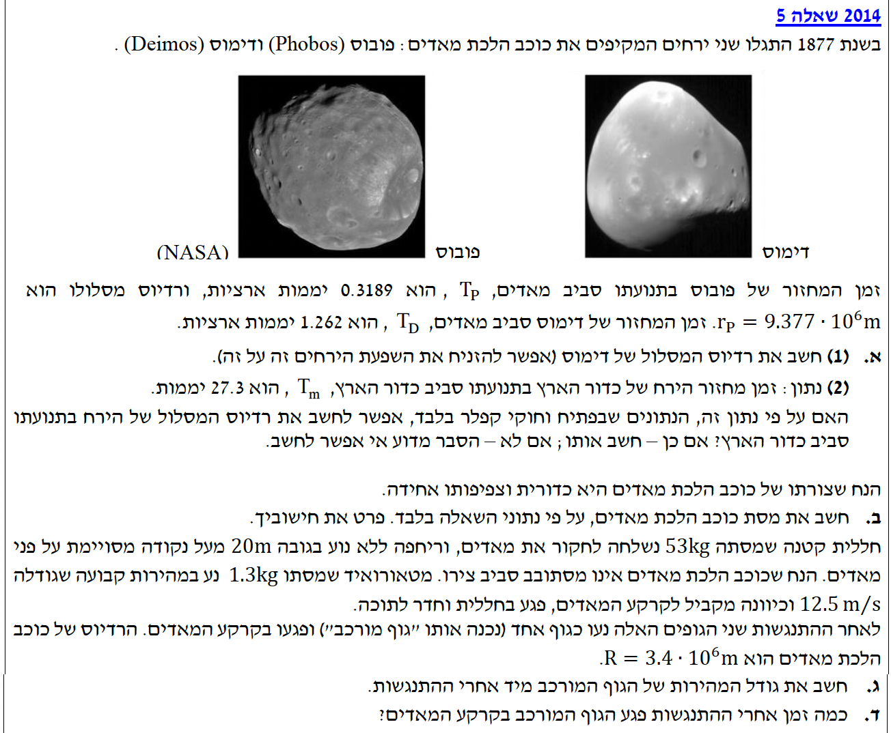

פתרון מלא, מודרך ומלווה בהסברים צעד אחר צעד

נרכז את הנתונים עבור ירחי מאדים. זמן תמיד מודדים בשניות (MKS), לכן נמיר את יחידות היממות (days) לשניות:
אנו מחפשים את רדיוס המסלול המעגלי של הירח דימוס, אותו נסמן כ- \( r_D \).
נשתמש בעקרון של החוק השלישי של קפלר (היחס בין זמן המחזור בריבוע לרדיוס המסלול בשלישית הוא קבוע עבור כל הלוויינים המקיפים גוף מרכזי זהה):
\( \frac{T^2}{R^3} = \text{const} \)על פי החוק השלישי של קפלר, נרשום את היחס עבור שני הירחים פובוס ודימוס בדיוק לפי תבנית הנוסחה:
כדי לבודד את רדיוס המסלול של דימוס \( r_D \), נוציא שורש שלישי משני האגפים (כלומר, נעלה את האגף הימני בחזקת שני-שלישים) ונכפול ב-\( r_P \):
נציב את הנתונים המספריים המומרים (יחידות השניות יצטמצמו):
\( r_D = 2.35 \cdot 10^7 \text{ m} \)
נתון זמן המחזור של ירח כדור הארץ סביב כדור הארץ: \( T_m = 27.3 \text{ days} \).
האם ניתן להשתמש אך ורק בנתוני השאלה וחוקי קפלר כדי לחשב את רדיוס ירח כדור הארץ? אם כן - יש לחשב, אם לא - להסביר.
לא, אי אפשר לחשב על סמך נתונים אלו בלבד.
ההסבר:
חוק קפלר השלישי מתקיים עם אותו קבוע יחס אך ורק עבור מערכת לוויינים המקיפה את אותו גוף מרכזי. קבוע היחס תלוי אך ורק במסת הגוף המרכזי.
הנתונים בשאלה עוסקים בירחים המקיפים את מאדים. לעומת זאת, ירח כדור הארץ מקיף את כדור הארץ, שהוא גוף מרכזי בעל מסה שונה לחלוטין. לכן, לא ניתן להשוות את היחס של ירחי מאדים ליחס של ירח כדור הארץ. כדי לחשב את הרדיוס נהיה חייבים לקבל כנתון את מסת כדור הארץ, שאינה נתונה בבעיה זו.
לחשב את מסת כוכב הלכת מאדים \( M \).
כדי למצוא את מסת הגוף המרכזי, נפתח את הקשר מתוך חוקי ניוטון. נשתמש אך ורק בנוסחאות המופיעות בדף הנוסחאות של תנועה מעגלית וכבידה:
\( \Sigma \vec{F} = m\vec{a} \) \( F = G\frac{m_1 m_2}{r^2} \) \( a_R = \frac{v^2}{r} \) \( v = \frac{2\pi r}{T} \)הכוח היחיד הפועל על הירח הוא כוח הכבידה של מאדים. הוא מכוון למרכז המסלול המעגלי ומהווה את הכוח הרדיאלי.
נרשום את משוואת הכוחות (החוק השני של ניוטון) מתוך דף הנוסחאות. נסמן את מסת הירח באות \(m\):
בציר הרדיאלי, הכוח היחיד שפועל ככוח צנטריפטלי הוא כוח הכבידה של מאדים (\(F_G\)), ולכן נרשום:
מדף הנוסחאות ניקח את הביטוי לכוח הכבידה העולמי \( F_G = G\frac{M \cdot m}{r^2} \) ואת הביטוי לתאוצה רדיאלית \( a_R = \frac{v^2}{r} \) ונציב אותם ישירות משני צידי המשוואה:
כעת, נציב את ביטוי המהירות הקווית מדף הנוסחאות \( v = \frac{2\pi r}{T} \) ונפתח סוגריים:
שלב קריטי: נחלק את שני האגפים במסת הירח \(m\) וכך נצמצם אותה לחלוטין מן המשוואה:
נבודד את מסת מאדים (\(M\)):
נציב את נתוני הירח פובוס (חשוב מאוד להשתמש בזמן בשניות כפי שהמרנו מראש):
נעגל את התוצאה הסופית ל-3 ספרות מהותיות:
\( M = 6.43 \cdot 10^{23} \text{ kg} \)
את גודל המהירות המשותפת של הגוף המורכב מיד לאחר ההתנגשות האופקית, אותה נסמן באות \( u \).
נשתמש בעקרון חוק שימור התנע, המתקיים כיוון שבציר האופקי לא פועלים כוחות חיצונים. בהתנגשות פלסטית הגופים נעים יחד לאחר המכה, ולכן המהירות הסופית של שניהם שווה (\( \vec{u}_1 = \vec{u}_2 \)):
\( m_1 \vec{v}_1 + m_2 \vec{v}_2 = m_1 \vec{u}_1 + m_2 \vec{u}_2 \)נבחר את ציר ה- \( x \) החיובי בכיוון תנועת המטאורואיד. נרשום את משוואת התנע:
נציב את הערכים:
נעגל את התוצאה הסופית ל-3 ספרות מהותיות:
\( u = 0.299 \text{ m/s} \)
כמה זמן (\( t \)) אחרי ההתנגשות הגוף המורכב יפגע בקרקע המאדים.
הערה מתודית: נבחר ציר אנכי \( y \) המכוון כלפי מטה, לכן תאוצת הכובד היא חיובית (\( +g_M \)). בנפילה חופשית הכוח היחיד הפועל הוא כוח הכובד.
נמצא תחילה את תאוצת הכובד על פני מאדים \( g_M \). נשווה את משקל הגוף לכוח הכבידה העולמי על פני הכוכב (הגובה זניח לעומת רדיוס מאדים): \( mg_M = G\frac{Mm}{R_M^2} \). לאחר צמצום מסת הגוף \(m\), נקבל את הביטוי לתאוצת הכובד: \( g_M = \frac{GM}{R_M^2} \). אליו נציב את הנתונים:
כעת, נציב את הנתונים האנכיים למשוואת המקום-זמן. כיוון שהגוף מתחיל מריחוף (אפס מהירות אנכית, \( v_{0y}=0 \)), המשוואה מתקצרת:
נציב את הדרך \( y = 20 \text{ m} \) ונחלץ את הזמן \( t \):
\( t = 3.28 \text{ s} \)